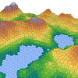
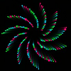
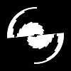

back
Creative Coding

A 3D visualization of "maps" generated with Perlin Noise, built-into Processing.
several tesselations were implemented by hand, the height of each prism is defined by the noise value.

a firework-shooting toy with 7 different styles of firework
plus a black hole rocket which attracts the particles from other fireworks!
Repository on GitHub

A Hex-tesselation filter for video, shown in the gallery working in real time with a webcam.

Assorted images generated from the sine function.
all made with Processing.

a couple of circle-to-triangle morphs created with P5.js for Daniel Shiffman's Coding Challenge #81

Implementation of a random dot autostereogram generator algorythm found online.
Autostereograms are the "magic eye" illusions. The example shown here is supposed to reveal a horse.

assorted works.
back